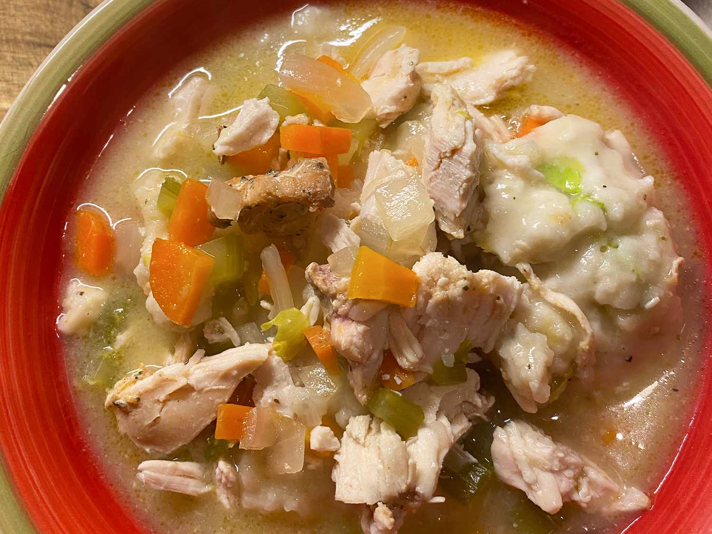

Chicken and Dumplings Recipe

Description
This recipe takes around 50 minutes to finish, 15 minutes of prep time and 35 of cooking time. It makes 6 servings.
From Allrecipes Easy Chicken and Dumplings Recipe
Ingredients
- 32oz chicken broth
- 4 skinless, boneless chicken breasts, cubed
- 1 onion, chopped
- 1/2 pound baby carrots
- 2 stalks celery, chopped
- 1 bay leaf
- 2 1/4 cups baking mix
- 2/3 cup milk
- Salt and pepper to taste
Steps
- Combine chicken broth, chicken, onion, carrots, celery, bay leaf, salt, and pepper in a large pot; bring to a boil. Reduce the heat, cover, and simmer until chicken is no longer pink in the center and the vegetables are tender, 20 to 25 minutes.
- Mix baking mix and milk together in a bowl until a sticky dough forms. Drop golf ball-sized pieces of dough into the soup. Cover the pot and cook until dumplings are cooked through, about 10 more minutes.